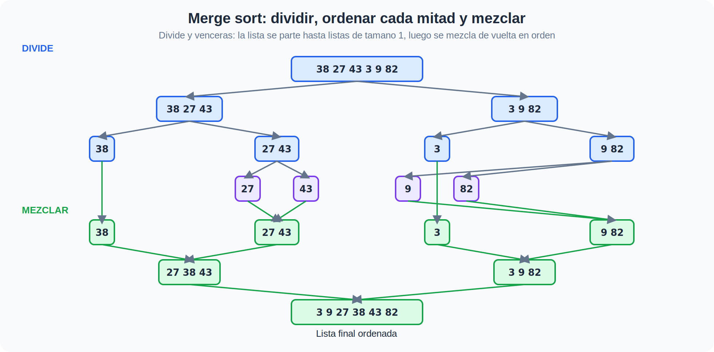

Algoritmos de ordenamiento en Python#
Curso: Técnicas de Programación · Unidad 3 Tema: Ordenamiento burbuja, selección, inserción y mezcla
Este notebook desarrolla cuatro algoritmos clásicos de ordenamiento: burbuja, selección e inserción (los tres O(n²), fáciles de entender) y mezcla (merge sort, O(n log n), más rápido en listas grandes). Cada sección incluye idea intuitiva, pseudocódigo, implementación en Python y un ejemplo. Al final hay una comparación de rendimiento y ejercicios propuestos.
📎 Material de apoyo (teoría completa): revisa primero la página Ordenamiento de esta unidad.
Contenidos#
Función de apoyo para mostrar listas#
Usaremos una pequeña función para mostrar rápidamente ejemplos de listas antes y después de aplicar cada algoritmo.
def mostrar_ejemplo(algoritmo, lista_original):
print(f"Lista original : {lista_original}")
lista = lista_original.copy()
algoritmo(lista)
print(f"Lista ordenada : {lista}\n")
1) Ordenamiento burbuja (Bubble Sort)#
Idea básica#
Recorres la lista comparando cada par de elementos adyacentes: si están en el orden incorrecto, los intercambias. Repites este recorrido varias veces; en cada pasada, el elemento más grande “burbujea” hasta su posición final al final de la lista.
Recorres la lista de izquierda a derecha comparando pares vecinos.
Si
arr[j] > arr[j+1], los intercambias.Al terminar una pasada completa, el elemento más grande ya quedó en su posición correcta.
Repites, ignorando la parte ya ordenada al final, hasta que una pasada no haga ningún intercambio.
Pseudocódigo#
para i desde 0 hasta n-2:
hubo_intercambio = falso
para j desde 0 hasta n-2-i:
si arr[j] > arr[j+1]:
intercambiar arr[j] y arr[j+1]
hubo_intercambio = verdadero
si no hubo_intercambio: romper (la lista ya esta ordenada)
Complejidad#
Peor y promedio: O(n²) comparaciones e intercambios.
Mejor caso (lista ya ordenada), con la optimización de cortar temprano: O(n).
Es el más simple de los cuatro, pero también el menos eficiente en la práctica.
def bubble_sort(arr: list) -> None:
"""Ordena la lista arr en el lugar usando el algoritmo de burbuja.
Corta temprano si una pasada completa no hizo ningun intercambio (la lista ya esta ordenada).
"""
n = len(arr)
for i in range(n - 1):
hubo_intercambio = False
# Cada pasada deja el elemento mas grande restante al final, por eso el rango se achica con -i
for j in range(n - 1 - i):
if arr[j] > arr[j + 1]:
arr[j], arr[j + 1] = arr[j + 1], arr[j]
hubo_intercambio = True
if not hubo_intercambio:
break
Ejemplo con Bubble Sort#
lista_ejemplo = [64, 25, 12, 22, 11]
mostrar_ejemplo(bubble_sort, lista_ejemplo)
Lista original : [64, 25, 12, 22, 11]
Lista ordenada : [11, 12, 22, 25, 64]
2) Ordenamiento por selección (Selection Sort)#
Idea básica#
Imagina que quieres ordenar una fila de números de menor a mayor:
Buscas el número más pequeño de toda la lista.
Lo intercambias con el número que está en la primera posición.
Luego repites el proceso con el resto de la lista (desde la posición 2 en adelante).
Continúas hasta que toda la lista esté ordenada.
Pseudocódigo#
para i desde 0 hasta n-2:
encontrar el índice del elemento mínimo desde i hasta n-1
intercambiar el elemento en i con el elemento mínimo encontrado
Complejidad#
Comparaciones: O(n²)
Intercambios: O(n) — a diferencia de burbuja, hace como máximo un intercambio por pasada.
No es muy eficiente para listas grandes, pero es fácil de entender.
def selection_sort(arr: list) -> None:
"""Ordena la lista arr en el lugar usando el algoritmo de seleccion.
Modifica la lista original (no retorna nada).
"""
n = len(arr)
for i in range(n - 1):
# Suponemos que el minimo esta en la posicion i
min_index = i
# Buscamos el verdadero minimo en el resto de la lista
for j in range(i + 1, n):
if arr[j] < arr[min_index]:
min_index = j
# Intercambiamos el minimo encontrado con la posicion i
arr[i], arr[min_index] = arr[min_index], arr[i]
Ejemplo con Selection Sort#
lista_ejemplo = [64, 25, 12, 22, 11]
mostrar_ejemplo(selection_sort, lista_ejemplo)
Lista original : [64, 25, 12, 22, 11]
Lista ordenada : [11, 12, 22, 25, 64]
3) Ordenamiento por inserción (Insertion Sort)#
Idea básica#
Este algoritmo funciona de forma similar a cómo ordenas tus cartas en la mano:
Consideras que el primer elemento ya está ordenado.
Tomas el siguiente elemento y lo “insertas” en la posición correcta dentro de la parte ya ordenada.
Repites el proceso para cada elemento hasta acabar la lista.
Pseudocódigo#
para i desde 1 hasta n-1:
clave = arr[i]
j = i - 1
mientras j >= 0 y arr[j] > clave:
arr[j + 1] = arr[j]
j = j - 1
arr[j + 1] = clave
Complejidad#
Peor caso: O(n²)
Mejor caso (lista ya ordenada): O(n)
Suele ser más eficiente que selección para listas casi ordenadas.
def insertion_sort(arr: list) -> None:
"""Ordena la lista arr en el lugar usando el algoritmo de insercion."""
for i in range(1, len(arr)):
clave = arr[i]
j = i - 1
# Desplazamos los elementos mayores que clave una posicion a la derecha
while j >= 0 and arr[j] > clave:
arr[j + 1] = arr[j]
j -= 1
# Insertamos la clave en su posicion correcta
arr[j + 1] = clave
Ejemplo con Insertion Sort#
lista_ejemplo = [5, 2, 9, 1, 5, 6]
mostrar_ejemplo(insertion_sort, lista_ejemplo)
Lista original : [5, 2, 9, 1, 5, 6]
Lista ordenada : [1, 2, 5, 5, 6, 9]
4) Ordenamiento por mezcla (Merge Sort)#
Idea básica#
Merge Sort es un algoritmo de tipo divide y vencerás — el mismo patrón que viste en la Unidad 2 con la potencia rápida y en la búsqueda binaria de esta unidad:
Divide la lista en dos mitades hasta llegar a listas de tamaño 1.
Conquista: ordena recursivamente cada mitad.
Combina: mezcla (merge) las dos mitades ordenadas en una sola lista ordenada.

Pseudocódigo (versión recursiva)#
si el tamaño de la lista es 1 o 0: está ordenada
dividir la lista en dos mitades izquierda y derecha
ordenar recursivamente la mitad izquierda
ordenar recursivamente la mitad derecha
mezclar (merge) las dos mitades ordenadas en una sola lista ordenada
Complejidad#
Tiempo: O(n log n) en el peor, medio y mejor caso.
Espacio: O(n), porque se usan listas auxiliares para mezclar.
Es mucho más eficiente que burbuja, selección e inserción para listas grandes.
def merge(left: list, right: list) -> list:
"""Mezcla (merge) dos listas ordenadas y retorna una nueva lista ordenada."""
resultado = []
i = j = 0
# Recorremos ambas listas mientras haya elementos en ambas
while i < len(left) and j < len(right):
if left[i] <= right[j]:
resultado.append(left[i])
i += 1
else:
resultado.append(right[j])
j += 1
# Agregamos los elementos restantes (solo una de las dos listas tendra elementos)
resultado.extend(left[i:])
resultado.extend(right[j:])
return resultado
def merge_sort(arr: list) -> list:
"""Retorna una nueva lista ordenada usando Merge Sort (no modifica la original)."""
if len(arr) <= 1:
return arr
mitad = len(arr) // 2
izquierda = merge_sort(arr[:mitad])
derecha = merge_sort(arr[mitad:])
return merge(izquierda, derecha)
Ejemplo con Merge Sort#
merge_sort no modifica la lista original — a diferencia de los tres algoritmos anteriores, retorna una lista
nueva. Por eso el ejemplo se ve un poco distinto a los anteriores.
lista_ejemplo = [38, 27, 43, 3, 9, 82, 10]
print(f"Lista original : {lista_ejemplo}")
lista_ordenada = merge_sort(lista_ejemplo)
print(f"Lista ordenada : {lista_ordenada}")
Lista original : [38, 27, 43, 3, 9, 82, 10]
Lista ordenada : [3, 9, 10, 27, 38, 43, 82]
5) Comparación de rendimiento#
Haremos una prueba simple de tiempo para comparar los cuatro algoritmos en listas de distintos tamaños.
Nota: estos tiempos son aproximados y dependen de tu computadora. El objetivo es ver la diferencia de crecimiento entre O(n²) (burbuja, selección, inserción) y O(n log n) (mezcla).
import random
import time
def medir_tiempo(algoritmo, datos, es_in_place=True):
lista = datos.copy()
inicio = time.time()
if es_in_place:
algoritmo(lista)
else:
_ = algoritmo(lista)
fin = time.time()
return fin - inicio
tamanos = [100, 500, 1000]
for n in tamanos:
datos = [random.randint(0, 10000) for _ in range(n)]
t_bur = medir_tiempo(bubble_sort, datos, es_in_place=True)
t_sel = medir_tiempo(selection_sort, datos, es_in_place=True)
t_ins = medir_tiempo(insertion_sort, datos, es_in_place=True)
t_mer = medir_tiempo(merge_sort, datos, es_in_place=False)
print(f"Tamaño n={n}")
print(f" Bubble Sort : {t_bur:.5f} segundos")
print(f" Selection Sort : {t_sel:.5f} segundos")
print(f" Insertion Sort : {t_ins:.5f} segundos")
print(f" Merge Sort : {t_mer:.5f} segundos\n")
Tamaño n=100
Bubble Sort : 0.00032 segundos
Selection Sort : 0.00015 segundos
Insertion Sort : 0.00013 segundos
Merge Sort : 0.00012 segundos
Tamaño n=500
Bubble Sort : 0.00827 segundos
Selection Sort : 0.00503 segundos
Insertion Sort : 0.00317 segundos
Merge Sort : 0.00102 segundos
Tamaño n=1000
Bubble Sort : 0.03640 segundos
Selection Sort : 0.01665 segundos
Insertion Sort : 0.01428 segundos
Merge Sort : 0.00146 segundos
6) Tabla comparativa#
Algoritmo |
Peor caso |
Mejor caso |
¿Estable? |
¿In-place? |
|---|---|---|---|---|
Burbuja |
O(n²) |
O(n) con corte temprano |
Sí |
Sí |
Selección |
O(n²) |
O(n²) |
No |
Sí |
Inserción |
O(n²) |
O(n) |
Sí |
Sí |
Mezcla |
O(n log n) |
O(n log n) |
Sí |
No (usa O(n) de espacio extra) |
Estable significa que dos elementos iguales mantienen su orden relativo original después de ordenar — importa cuando ordenas por un criterio pero quieres conservar el orden previo en los empates.
In-place significa que el algoritmo ordena reorganizando la misma lista, sin necesitar una copia del tamaño de los datos — burbuja, selección e inserción lo son; mezcla no, porque construye listas nuevas al combinar.
7) Ejercicios propuestos#
bubble_sort_descendente: modifica bubble sort para ordenar de mayor a menor en vez de menor a mayor.insertion_sort_conteo: version de insertion sort que además retorna cuántas comparaciones hizo en total.esta_ordenada: función que revisa en O(n) si una lista ya está ordenada ascendentemente (útil para probar el mejor caso de burbuja e inserción).merge_sort_iterativo: reto — implementa merge sort de forma iterativa (bottom-up: mezclar sublistas de tamaño 1, luego 2, luego 4, …) en vez de recursiva.Aplicado: dada una lista de diccionarios
[{"nombre": ..., "nota": ...}, ...], usainsertion_sort(adaptado) para ordenarla por"nota"de mayor a menor.
def bubble_sort_descendente(arr: list) -> None:
# TODO: version de bubble_sort que ordena de mayor a menor
pass
def insertion_sort_conteo(arr: list) -> int:
# TODO: version de insertion_sort que retorna el numero de comparaciones realizadas
pass
def esta_ordenada(arr: list) -> bool:
# TODO: retorna True si arr esta ordenada ascendentemente, en O(n)
pass
def merge_sort_iterativo(arr: list) -> list:
# TODO (reto): version iterativa (bottom-up) de merge sort
pass
def ordenar_por_nota(estudiantes: list) -> list:
# TODO: ordena una lista de diccionarios {"nombre": ..., "nota": ...} por "nota" de mayor a menor
pass
8) Soluciones de referencia (opcional)#
Solo se muestran las soluciones de los ejercicios 1 y 3 — intenta resolver el resto por tu cuenta antes de buscar más ayuda.
def solucion_bubble_sort_descendente(arr: list) -> None:
n = len(arr)
for i in range(n - 1):
hubo_intercambio = False
for j in range(n - 1 - i):
if arr[j] < arr[j + 1]: # unico cambio: < en vez de >
arr[j], arr[j + 1] = arr[j + 1], arr[j]
hubo_intercambio = True
if not hubo_intercambio:
break
def solucion_esta_ordenada(arr: list) -> bool:
for i in range(len(arr) - 1):
if arr[i] > arr[i + 1]:
return False
return True
datos = [5, 2, 9, 1, 5, 6]
solucion_bubble_sort_descendente(datos)
assert datos == [9, 6, 5, 5, 2, 1]
assert solucion_esta_ordenada([1, 2, 2, 5, 9]) is True
assert solucion_esta_ordenada([1, 5, 2]) is False
print("Las soluciones de referencia pasan todas las pruebas.")
Las soluciones de referencia pasan todas las pruebas.
9) Apéndice#
¿Cuál algoritmo usar?#
Burbuja es sencillo de entender pero poco eficiente para listas grandes; se usa casi siempre con fines didácticos.
Selección hace pocos intercambios (útil si escribir/mover datos es costoso), pero siempre recorre todo el resto de la lista, incluso si ya está ordenada.
Inserción es útil cuando la lista está casi ordenada o es pequeña — su mejor caso es O(n).
Mezcla es más complejo conceptualmente, pero ofrece un rendimiento mucho mejor en listas grandes gracias a su complejidad O(n log n); es la base de algoritmos de ordenamiento usados en la práctica (como Timsort, que usa Python internamente en
sorted()).
Errores frecuentes#
Olvidar copiar la lista antes de comparar “antes/después” — los algoritmos in-place modifican la lista original.
En burbuja: olvidar reducir el rango de la comparación en cada pasada (
n - 1 - i), lo que hace comparaciones de más innecesarias (el algoritmo sigue funcionando, pero pierde la ventaja del corte temprano).En mezcla: olvidar que
merge_sortretorna una lista nueva en vez de modificar la original en el lugar.
Material de apoyo#
Página de teoría de esta sección: Ordenamiento
Puedes modificar los ejemplos, probar con tus propias listas y agregar impresiones paso a paso si quieres visualizar mejor cómo funciona cada algoritmo.